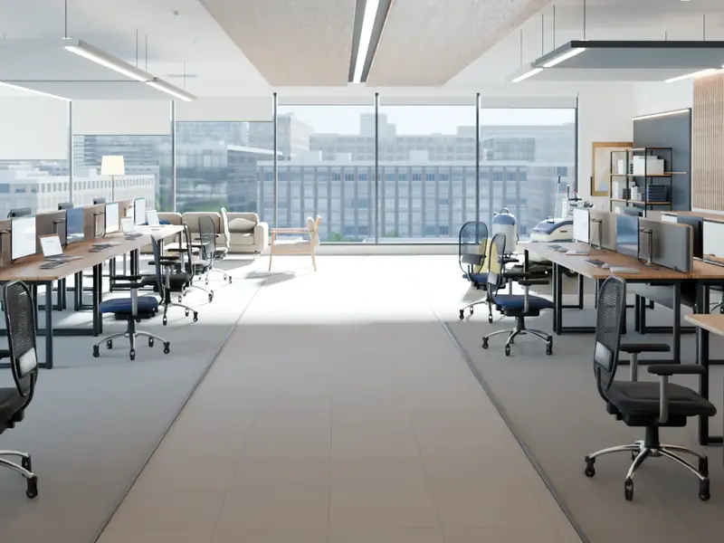
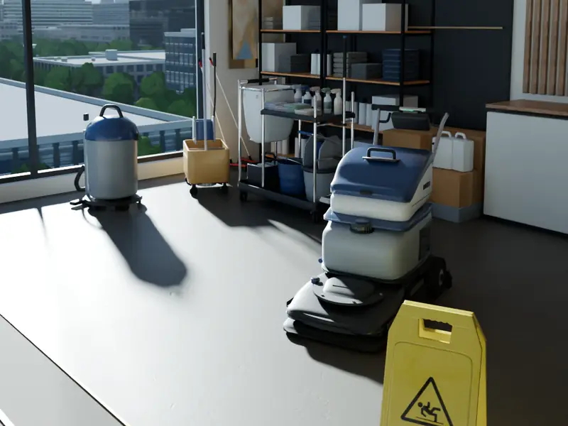

Vikilini · Для бизнеса
Клининг коммерческой недвижимости в Москве
Регулярная и разовая уборка офисов, бизнес-центров, торговых и складских помещений. Подбираем состав работ под ваш объект.
черновик текстаУслуги
Регулярное обслуживание
Уборка офисов, торговых и бизнес-центров, производственных и складских помещений на постоянной основе.
черновик текстаЗоны обслуживания
Рабочие зоны и общие пространства
Open space, коридоры и зона ресепшен: единый подход к порядку во всём помещении.
черновик текстаПереговорные
Переговорные и зоны встреч
Порядок там, где вы принимаете клиентов и партнёров: переговорные, зоны ожидания, общие комнаты. График и формат согласуем с заказчиком.
черновик текстаОборудование
Оборудование и организация уборки
Состав работ, оборудование и профессиональную химию подбирает наш технолог после аудита объекта.
черновик текстаСледующий шаг
Расскажите об объекте
Укажите тип помещения, площадь и желаемую периодичность — подготовим расчёт.
черновик текстаУслуги
Vikilini — клининговая компания по уборке помещений в Москве и Московской области. Наша фирма специализируется на работе с коммерческими объектами: офисами, торговыми и бизнес-центрами, производственными и складскими площадями. Сотрудники оказывают разовые услуги или проводят клининговые мероприятия на постоянной основе.
текст с текущего сайта, требует подтверждения

Варианты уборки
Тип и объем клининговых процедур определяет заказчик, а состав работ, оборудование и профессиональную химию подбирает наш технолог после аудита объекта. Компания выполняет следующие виды уборки помещений:
- генеральную;
- ежедневную;
- послестроительную;
- санитарную;
- комплексную;
- вечернюю;
- после ремонта.
По согласованию с заказчиком наши клинеры оказывают дополнительные услуги (моют посуду, ухаживают за комнатными растениями) и наводят порядок на прилегающих территориях.
- Комплексная уборка помещений
- Уборка прилегающей территории
- Уход за зданиями
- Уход за газонами и зелеными насаждениями
- Дератизация и дезинсекция
- Вывоз мусора и снега
Как мы работаем
шаги — текст с текущего сайта, требует подтверждения
заголовок раздела — черновик (на текущем сайте блок назван «Три этапа работы»)

Аудит помещения: выезд специалиста, разработка технологом методики и подбор средств.
Обработка материалов и покрытий с учетом их особенностей.
Проведение специальных работ: восстановление фактуры, уход за фасадами альпинистами и т.д.
Почему VIKILINI
карточки — текст с текущего сайта, требует подтверждения
заголовок раздела — черновик (на текущем сайте у блока нет названия)
-
Система качества
В компании разработана система менеджмента качества. Сотрудники проходят регулярное повышение квалификации.
-
Индивидуальный подход
У каждого объекта свои особенности. Оптимизируем затраты заказчика, разрабатываем техкарты и системы качества.
-
Сотрудники — профессионалы
Сотрудники приятной внешности, воспитанные, без вредных привычек — с ними будет комфортно работать и общаться.
-
Подтверждённые сведения о компании
Место для проверенных фактов, документов и подтверждений. Формулировки появятся после согласования с владельцем.
черновик текста
Вопросы и ответы
вопросы и ответы — со страницы /faq/ текущего сайта, требуют подтверждения
Оказываете ли вы услуги в выходные и праздничные дни?
Оказание наших услуг происходит в любое удобное для заказчика время, включая ночное время, выходные и праздничные дни.
Как происходит оплата за оказанные услуги?
Оплата происходит по безналичному расчету на основании выставленного счета.
Безопасно ли пропускать на территорию предприятия чужой персонал?
Весь персонал имеет при себе все разрешительные документы, а также в компании имеется страхование ответственности третьих лиц.
Что из себя представляет комплексная уборка?
Комплексная уборка включает в себя удаление пыли и грязи со всех поверхностей, мытье окон и оконных рам с двух сторон, очистку полов, плинтусов, стен, потолка и сантехники.
Как часто делается генеральная уборка?
В зависимости от назначения помещения, в среднем 1 раз в месяц. Техническое помещение раз в 3 месяца. Офис 1 раз в месяц. Все зависит от назначения помещения.
- Офис продаж
- +7 (495) 796-68-57
- По эл. почте
- order@vikilini.ru
- Приём заявок
- Пн – Пт. с 9:00 до 18:00
Запрос расчёта
Заполните то, что известно сейчас: остальное уточним при обсуждении.